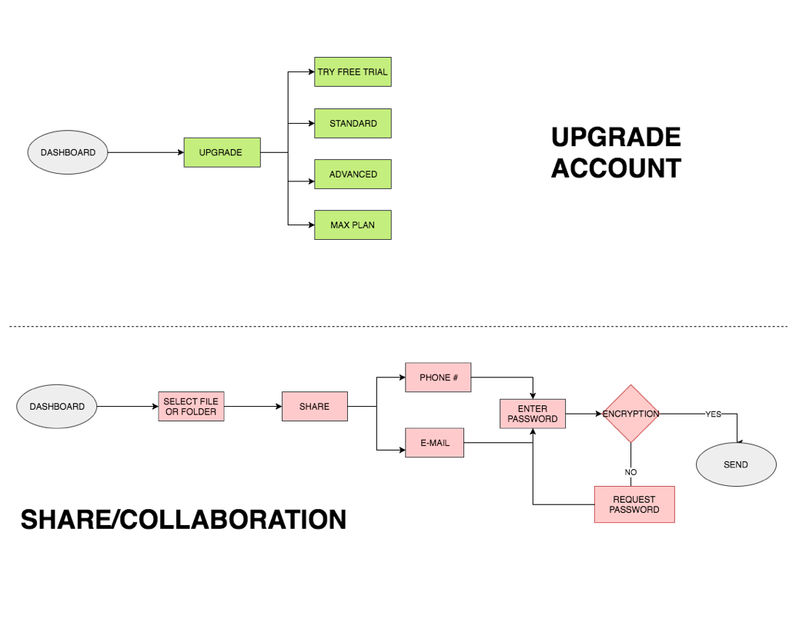
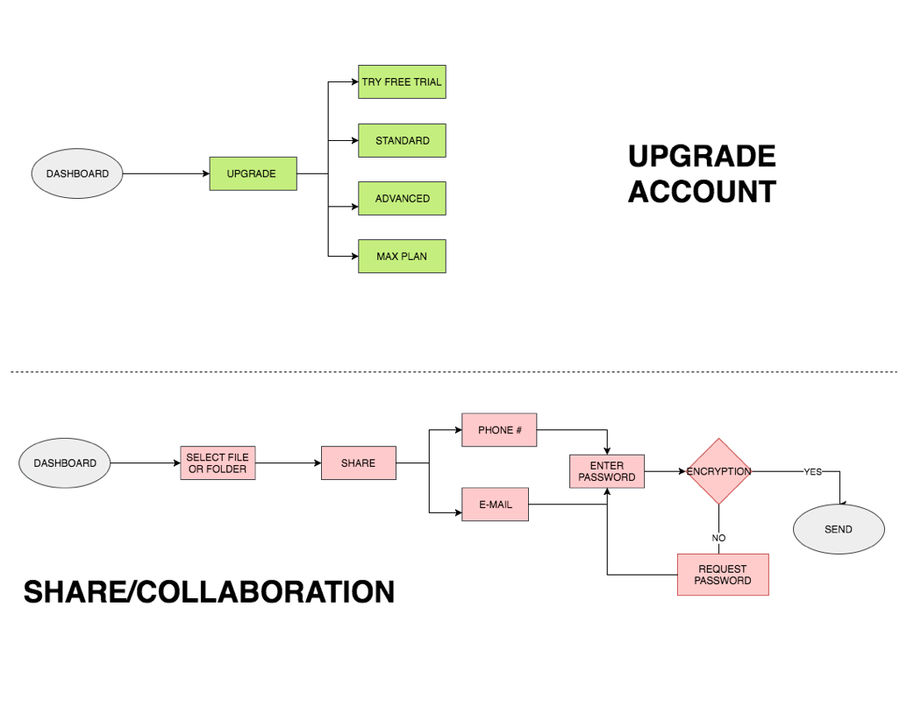

With this project being my second run, it taught me some valuable lessons as I progressed in my abilities to conduct research, analyze, test, and design.
+ Stick to your target.
Nothing proves more true when you’re working through research or design and a wrench is thrown in to leave you confused and back at square one. This was the case when I was coming up with a logo design and received varying feedback on my designs. I changed my audience to be more inclusive towards the opposite sex and felt that I had to create a logo that was “neutral” in a sense, but felt lost when I was drafting up versions with barber-related symbols. I needed to remind myself that my original intention was to have women as my target audience and create the best MVP possible. I could then later adjust what is now my “Lure” logo to have colors that were less “feminine” and more vibrant to match a more gender-neutral audience.
- Don’t spend time on screens you won’t be using
As I design my high-fidelity mockups, I often realize, “Oh wait! I also need to design these screens, otherwise the users will feel like they have suddenly jumped from one to another.” However, this can also lead me down a rabbit hole, chasing after other screens on my application that aren’t necessary to the user tasks that I want my users to test. Knowing that in the future, I won’t have the luxury of time, I have to learn to scale back the amount of time spent on designing my mockups, putting together the necessary screens for my prototype, and learning my tools thoroughly to save me from pixel pushing every single pixel, every screen at a time.
With more time, I would like to build out a basic information screen that the first-time user would have to fill out before booking an appointment. I realized that the application wouldn’t have any information on the user unless it grabbed data from another application. Conducting more research on “map” versus “list” presentation would also be useful in figuring out what was important to the user, as well as whether having one icon, a “heart”, to represent bookmarks and starred would be more effective than separating the two into different categories.


 
